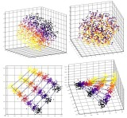
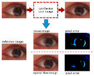
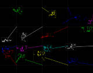

Hi, I'm Timo!
I'm a research assistant at the Computer Vision for Human-Computer Interaction (CVHCI) Lab, Karlsruhe Institute of Technology, Germany, where I completed my Diploma (MSc) in Informatics in 2014.
My research interests include Computer Vision, Machine Learning, and especially camera-based Gaze Estimation (or Eye Tracking).
If you have any questions or requests, please feel free to contact me.
Publications
Copyright Notice: This material is presented to ensure timely dissemination of scholarly and technical work. Copyright and all rights therein are retained by authors or by other copyright holders. All persons copying this information are expected to adhere to the terms and constraints invoked by each author's copyright. In most cases, these works may not be reposted without the explicit permission of the copyright holder.
-

Manifold Alignment for Person Independent Appearance-based Gaze Estimation
Timo Schneider, Boris Schauerte, Rainer Stiefelhagen
International Conference on Pattern Recognition (ICPR), Stockholm, Sweden, August, 2014.Abstract: We show that dually supervised manifold embedding can improve the performance of machine learning based person-independent and thus calibration-free gaze estimation. For this purpose, we perform a manifold embedding for each person in the training dataset and then learn a linear transformation that aligns the individual, person-dependent manifolds. We evaluate the effect of manifold alignment on the recently presented Columbia dataset, where we analyze the influence on 6 regression methods and 8 feature variants. Using manifold alignment, we are able to improve the person-independent gaze estimation performance by up to 31.2% compared to the best approach without manifold alignment. Keywords: Gaze Estimation, Manifold Alignment, Calibration-Free, Machine Learning -

Appearance-based Gaze Estimation using Manifold Alignment and Image Synthesis
Timo Schneider
Diploma Thesis (MSc), Karlsruhe Institute of Technology, January, 2014Abstract: Vision-based gaze estimation promises to be a cheap and accessible alternative to dedicated gaze tracking hardware. Since cameras are ubiquitous in our personal computing devices, like laptops, smartphones, and tablets, this offers opportunities for a plethora of new applications. By utilizing gaze behavior as another natural means of non-verbal communication, we can foster more convenient and natural human-computer interaction.
Remote gaze estimation does not need any physical contact with the user. However, it requires a calibration step, in which the user has to look at distinct calibration points, which in turn demands cooperation and effort. By omitting this calibration and using data of other calibrated persons, the estimation precision notably suffers, due to the person-specific eye appearances. As a solution, we propose Synchronized Delaunay Submanifold Embedding (SDSE), a manifold alignment technique that adjusts the persons’ eye patch features with similar gaze directions, to form a person- independent manifold. Thereby, we overcome the problem of dissimilar appearances and improve the performance for the subsequent calibration-free gaze estimation. Our tests with SDSE are conducted on two different gaze datasets, gawKIT and Columbia, for which we outperform the baseline by 10 % and 24 %, respectively.
Comprehensive training data is the key to build robust regression models. We use the available data to synthesize new eye images by using optical flow for image in- terpolation. This method non-linearly expands the existing manifolds and therefore provides supplemental information for training regression models. Here, we cannot beat the baseline without synthesized images, however, we decrease the estimation error for most configurations – e.g., Histograms of Oriented Gradients (HOG) in com- bination with k Nearest Neighbors (kNN) by 30 %, or multilevel-HOG with Principal Component Analysis (PCA) and Support Vector Regression (SVR) by 10 %.
The gaze estimation performance is tested on combinations of prominent features and regression methods, plus low-dimensional embedding by PCA. Amongst oth- ers, we compare the raw image, HOG and multilevel-HOG, Local Binary Patterns (LBP), or Discrete Cosine Transform (DCT) as features, and reduce the dimen- sionality to 256, 128, 64, 32, 16, and 8 dimensions, respectively. For regression we employ the aforementioned SVR and kNN, as well as Gaussian Processes Regression (GPR), Relevance Vector Regression (RVR), Regression Trees (Regtrees), Partial Least Squares (PLS), and Multivariate Adaptive Regression Splines (Splines). Be- sides, we use statistical tests to compare the results with and without SDSE, as well as with and without image synthesis, to ensure that the measured performance improvement is statistical significant. The observed improvement in the majority of combinations encourages the future use of the proposed approaches for precise calibration-free gaze estimation.
Keywords: Gaze Estimation, Manifold Alignment, Image Synthesis, Calibration-Free, Machine Learning -

Viewing Direction Estimation Based on 3-D Eyeball Construction for HRI
Timo Schneider
Study Thesis, Karlsruhe Institute of Technology, February, 2012Abstract: Gaze estimation refers to the task of estimating the point in 3-D space, at which the user is looking at, and indicates where his mental focus lies on. Alternatively the visual axis and the 3-D position of the user’s pupil can be calculated.
For this purpose, numerous approaches have been developed over the past three decades, and are required for various fields of application—from human-computer interfaces to psychological studies. Current commercial systems primarily use infrared light emitting diodes and image sensors to determine the position and orientation of the eye. But, this techniques require expensive hardware and can often not be used under uncontrolled lighting conditions, e.g., outdoors.
Gaze estimation can be utilized for a more natural and convenient human-robot interaction. The behaviour of our eyes plays an important role in natural conversation. For example, we glimpse at objects of interest when we talk about them, and, without naming them explicitly, our conversational partner will know what we are referring to. Furthermore we signalize attention or the lack of it, while maintaining eye contact or looking in another direction, respectively. Natural conversation is all about sensing these inconspicuous non- verbal signs. Consequently a robot needs to have these information, in order to make the human-robot interaction as natural as talking to another human.
In 2010, Reale, Hung and Yin published a paper entitled “Viewing Direction Estimation Based on 3-D Eyeball Construction for HRI”, where they describe a vision-based approach to estimate the gaze of a person under the aspect of human-robot interaction, that is able to work with normal webcams. This Study Thesis first describes this approach in detail and discusses potential aspects of improvement.
The gaze estimation approach has been implemented and evaluated and finally ideas for enhancements and future work will be collected.
Keywords: Gaze Estimation, Eyeball Model
{kind=link}
{kind=link}
{kind=link}
Photography
Besides Computer Vision research, I'm also interested in taking pictures and computational photography, such as panorama stitching and high-dynamic-range imaging.
Teleferic, Bregenz
Contact
If you have any questions, requests, or information to share, please don't hesitate to contact me. I'll do my best to answer as quickly as possible.
You can reach me via timo.schneider@student.kit.edu